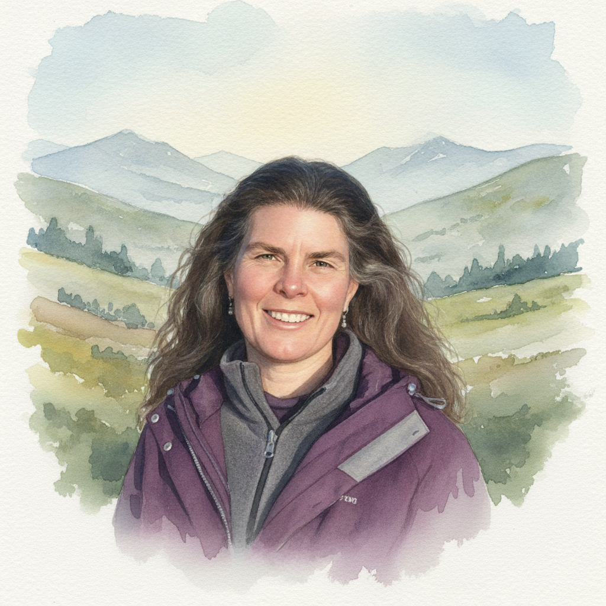

Sibongile Pradhan
Mediation • Coaching • Deep Listening • Facilitation • Training • Grief Tending
Hello.
I work with individuals, couples, families, colleagues, neighbours, community groups and organisational teams — to strengthen communication, explore challenges, develop understanding, navigate conflict, hold difficult conversations and express grief.
I believe that when people experience being heard and understood, new possibilities emerge. My work is grounded in the principles of Nonviolent Communication (NVC). To it all I bring warmth, curiosity and the intention to help people reconnect with themselves and one another.
I’m based in Edinburgh yet happy to travel.

Scroll down for the five elements of my work.
arrow_downwardAreas of Work

Nonviolent Communication (NVC) Coaching and Training
Coaching. If you would like to deepen your NVC practice, I offer coaching based on real situations in your life (or imagined examples if you prefer). I will support you to connect with the feelings and needs beneath the words and actions of yourself and other people. Together we’ll uncover what is really important to you in a situation, and find ways to express it authentically and with care for both yourself and the other. This is the essence of nonviolent communication (NVC) and I will coach you more or less explicitly depending on your preference and learning style.
Training. I offer training in the fundamentals of nonviolent communication (NVC) for individuals, couples, families and teams/groups, over a timeframe that suits you. Twice a year I co-teach the NVC Foundation Training in central Scotland with a colleague.

Deep Listening akin to Counselling
I offer sessions to which you can bring your thoughts, feelings, fears and desires, where everything is welcome without judgment. I will support you to connect with your emotions, to explore what is going on for you, and connect with what deeply matters. The sessions are led by you and held by me.
I have eight years of counselling experience, and training in counselling skills. While I am not a certified counsellor or therapist, many clients experience working with me as therapeutic. My approach is intuitive, relational, and grounded in the principles of nonviolent communication.

Mediation
I offer mediation in situations where there are existing relationships to be restored — between colleagues, friends, partners, neighbours, family members, students or community group members — where a rift has occurred and all parties are keen to repair it, or at least willing to give it a go.
Usually working alongside a mediation colleague, I hold space for conflict to be brought into the open, where each person can be heard for what matters to them, understand what’s going on for the other, and explore options for moving forward in a way that works well-enough for everyone.
Our approach has nonviolent communication at its heart, is accredited through Scottish Mediation and certified through the University of St Andrews Mediation Service. (See Sands Mediation.)

Group Facilitation
I support organisations, teams and groups to work together more effectively, by combining my experience of facilitating participatory community development and nonviolent communication.
This could be the facilitation of team away-days, or their development of vision and purpose; it could be supporting difficult conversations, facilitating decision-making, navigating a transition, or assisting teams develop healthier ways of working with conflict. I help organisations create conflict management strategies, so that clear agreements and systems are in place before tensions escalate into rifts.

Grief Tending
Grief is a natural response to loss, change or things not turning out as we expected. I can enable you to be more fully in touch with grief that you carry, whether it is recent or long-held, personal or collective.
Your grief may appear as sorrow, pain, anger or other feelings. It may arise from the loss of a loved one, a relationship, a community, a place, a way of life, or from an unrealised hope, or concerns about the wider world. Whatever form it takes, we will together welcome and encourage the expression of your grief.
If you long for a space in which to share grief in the companionship of others, I can help you create and facilitate community grief circles.
Warmth, curiosity and the intention to help people reconnect.
Sibongile Pradhan
I work with individuals, couples, families, colleagues, neighbours, community groups and organisational teams — to strengthen communication, explore challenges, develop understanding, navigate conflict, hold difficult conversations and express grief.
I believe that when people experience being heard and understood, new possibilities emerge. My work is grounded in the principles of Nonviolent Communication (NVC). To it all I bring warmth, curiosity and the intention to help people reconnect with themselves and one another.
- Grounded in Nonviolent Communication (NVC)
- Mediation accredited through Scottish Mediation and certified through the University of St Andrews Mediation Service
- Eight years of counselling experience, and training in counselling skills
- Based in Edinburgh yet happy to travel
“When people experience being heard and understood, new possibilities emerge.”
Sibongile Pradhan
Ready to start the conversation?
Every area of my work begins with a free 50-minute session — a chance to meet, talk about what you’re looking for, and see whether working together feels right. I’m based in Edinburgh yet happy to travel.
sibongilep@gmail.com • Edinburgh, Scotland